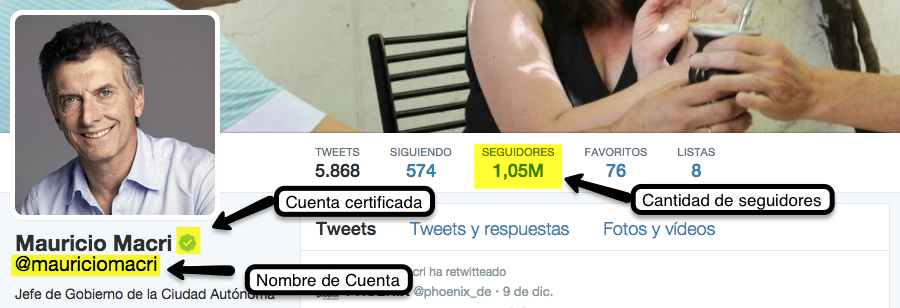
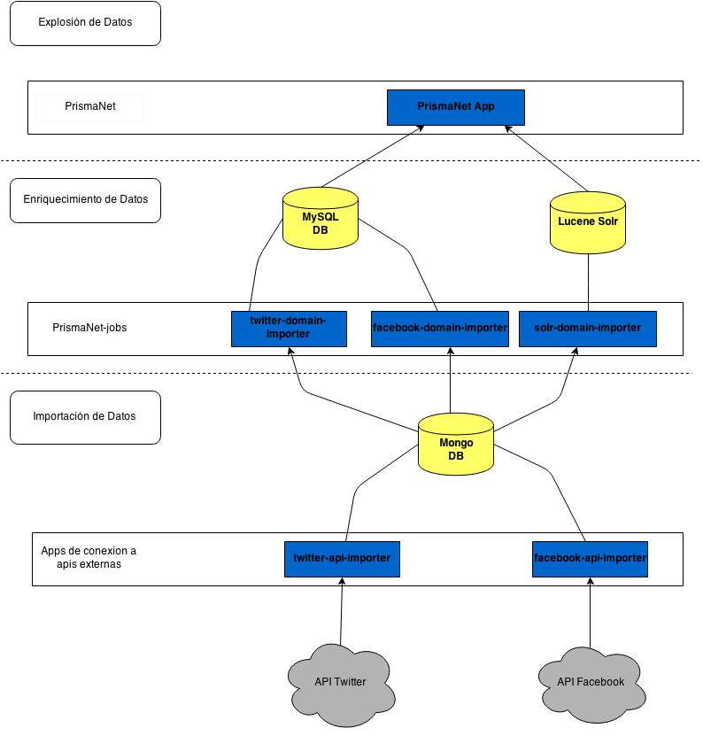

Bienvenidos
Prisma - Net
{? }

- Integrantes:
-
- Oscar Cáceres Paredes
- Santiago Donikian
- Tutor:
-
- M. Ing. Eduardo Diez
Prisma - Net
en tiempo real
Contexto

Información obtenida de Twitter


Información obtenida de Twitter

Información obtenida de Facebook
¿Como Funciona?
Arquitectura
Front-end
- CSS3
- Fontawesome
-
 Highcharts
Highcharts
- Bootstrap
- MomentJS
- HTML5
-
 JQuery
JQuery
-
 Grails
Grails
-
 PadrinoJS
PadrinoJS
- Wordcloud2JS
Back-end
- Grails
- Spring
- Hibernate
- Twitter4J
- Facebook4J
-
 MySQL
MySQL
-
 MongoDB
MongoDB
-
 Apache Solr
Apache Solr
- Quartz scheduler
- Springsecurity
-
 Java
Java
-
 Apache Tomcat
Apache Tomcat
Diagrama de arquitectura

Importación de datos
Procesamiento de Datos
Explotación de Datos
Implementación
Demo
Prisma - Net
Comercializacion
Prisma - Net